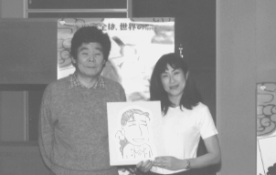

98.12.1（火）
・江崎さん来社。オーケストラ部分の音楽打ち合わせが行われる。結構凄いオーケストラを使うことになる。
・一日5.5CUTのレイアウトチェックを目標にしている田辺さんだが、今日もそれ以上のレイアウトを上げている。だがデスクの神村氏は「まだまだ」と慎重。
・今日から動画の矢沢さんがIN。
98.12.2（水）
・山口さん、シーン9-9の打ち合わせ。
・高橋さんが中心となり、奥田さんを巻き込んでの忘年会の打ち合わせが深夜0時すぎから行われる。スケジュール的にも厳しい状況なので、元気が出る忘年会にしようと、今までになかった企画を立案中。
98.12.3（木）
・バーにて全スタッフを集めてシーン4-6、9、11、12、5-3のラッシュが行われる。
・石井君が最近の上がりデータをようやく入力し終わったと思ったら、データの上書き中にコンピュータがフリーズ、今日の仕事がパーになる。その後必死に復旧をはかったが、元に戻ったのはもう夜遅く。普通に入れ直した方が早かったんじゃないの？ との意見もあり。因みに石井君のコンピュータは、「桐」を使うために高橋さんが購入した数少ないWindowsマシン。マック派の何人かは、その高橋さんを「それ見たことか」と攻撃していた。
・資料として「宮本武蔵」のビデオを新宿ツタヤに借りに行くも、三本あった武蔵もののビデオのうち、二本がレンタル中。まわりも見ても思いの外時代劇のレンタル中が数多い。今の時代単純明解さが好まれる？
98.12.4（金）
・デスク神村氏が小西、斎藤、田辺等と滞り気味の作業を打開するため話し合いを持つ。
・部次長会議が行われる。正月の予定等が決められる。監督等は元旦以外出勤。
・鈴木プロデューサーの命で、藤原先生が主人公のいしいひさいち「女には向かない職業」を15冊購入。
98.12.5（土）
・名古屋から新幹線に乗って大平さん来社。シーン9-2の作打ち。その後田辺氏等と夕食に行ったまま行方不明。なんでも阿佐ヶ谷の居酒屋で終電まで飲んでいたらしい。
・高畑監督も夕方から外出。一度会社に戻る予定だったため、鈴木プロデューサー等が打ち合わせの為待つも、戻って来ず。
98.12.7（月）
・朝一で制作会議。原動画等各セクションでの数字を出し合うが、相変わらず厳しい数字が並んでいる。これからどう追い込んでいけるのか、以前の作品とあまりに作風が違うので、なかなか数字が出し辛く、神村氏も頭を抱えている。と言いつつも、原動画一人一人と数字を詰めていくしかないようだ。
・マック版QARの新バージョンが出来上がって来たため、ついでにG3マックをOS8.5に入れ換える。とたんに新バージョンはもとより旧バージョンのマック版ＱＡＲまで動かなくなる。ＣＧ部泉津井さんのマックでは、8.5で動いたようなのでなんとも言えないが、一村教授が「8.5はもうちょっと待った方が良い」と言っていたのが思い出される。
98.12.8（火）
・川端、田中と制作経験者がみんな白髪になっていく中、先日ついに居村氏の頭にも白髪が見つかったが、今日、制作のホープ石井君の頭に早くも白髪が発見される。白髪サイクルが短くなっているような気がするのは私だけか？因みに動画チェック斎藤氏も白髪増殖中。
98.12.9（水）
・突然宮崎監督から呼ばれ二馬力に行くと、段ボールや水の入ったパイプとを組み合わせて作ったスピーカーの試聴会が行われていた。何種類かあるスピーカー全てに共通するのが、何枚かの段ボールを組み合わせて作った非常に薄いものなのに、音が高音から低音まで実になまなましく聴こえること。それにバックの素材の厚さや内部に掘られた溝によって音を柔らかくしたりと変化を加えている。実際に聴いてとても気にいった宮崎監督は、水パイプを使った、外見的に現代アートおぼしきユニークなスピーカーを購入。
98.12.10（木）
・神村氏が体調不良によりお休み。休みの連絡電話の第一声が「寒い…」大丈夫か神村氏。
・二馬力にて男鹿さんが描いた「コロの大散歩」の美術展示会が開かれる。ほぼ社員全員が参加。実物より魅力的に描かれた小金井の情景に感動する。
・シーン5-6、9-4の色打ち合わせが行われる。
98.12.11（金）
・今日も神村氏が体調不良でお休み。一寸心配だが、居村氏はただでさえ制作が少ない上、演助の仕事をかねているためてんてこまい。かなり恨んでいる模様。
・今月から、ホームページの担当が変わる。私（石光）から、結婚が決まり今とってもハッピーな田中さんへと引き継がれることに。田中さんの結婚という衝撃の事実が伝わって、はや1ヶ月。日誌担当の田中さんにはこの間、「まだ具体的には決まっていないから……」と日誌掲載を拒否されていたが、最後だから載せてしまおう。（なんと、田中さんはこのホームページを通して相手の人と知り合ったらしい。ホームページ担当の私もびっくり。一体いつの間に、という感じです）。しかし、居村さんといい、田中さんといい、ジブリ内では結婚ラッシュが続くなあ。
98.12.12（土）
・シーン9-7、9-10の色打ちが行われる。
・シーン5-5、14-1のラッシュチェックが行われる。
・１階仕上げルームで、新たに導入されるコンピュータを置くスペースを作るため、大掃除を兼ねた席替えが行われる。しかしどこの部署も段々狭くなる一方。
98.12.14（月）
・午後から早稲田アバコスタジオにて矢野顕子さん演ずる藤原先生の録音が行われる。この役は、矢野さんがジブリに来社した際、鈴木プロデューサーがふと思い付いて提案したものなのだが、実際演じてもらうと、正にぴったりの役。あまりの違和感の無さに高畑監督も大喜び。数回の練習の後本番に入り、あっと言う間にOKが出る。その後は高畑監督、矢野さんが並んでの各紙記者による記者会見が行われる。私もカメラマンと並んでホームページ用の写真を撮るべくシャッターを切りまくる。

98.12.15（火）
・シーン9-11、10-3の色打ち合わせが行われる。
・若林さん、効果の伊藤さん等が来社し、高畑監督と効果音の簡単な打ち合わせを行う。さりげない町の効果音（今日参考に持ってきたのは、都内で６時になると音楽と共に流れる「…６時になりました。皆さんお家に帰りましょう…」のテープ）等について話し合われる。
・安藤氏の打ち合わせ、シーン8-4が行われる。
98.12.16（水）
・ディズニー第二の黄金時代を作り上げた、ディズニー・フィーチャー・アニメーションの社長ピーター・シュナイダー、副社長のトーマス・シューマッカー両氏が来社、できたばかりの予告編を35mmで鑑賞する。「なぜブラックアンドホワイトの部分があるのか？」「どういう内容の作品なのか」等鋭い質問を鈴木プロデューサーにぶつけていた。因みに鈴木プロデューサーも負けじとそれらの質問に、作品同様面白おかしく答えていた。また、午後からスタッフ向けの予告編上映会も行われる。この予告編は全国松竹・東急洋画系（ブラッド・ピッドが出ている「ジョー・ブラックをよろしく」）及びワーナーマイカル全スクリーンで上映している。
98.12.17（木）
・山口さんの手持ちが無くなったため、急遽シーン7-3の作打ちが行われる。それにしても早い。
・原画を手伝ってくれるかもしれない田辺氏の友人が来社。今までに出来上がったフィルムや資料に目を通す。
98.12.18（金）
・シーン9-6の色打ち合わせが行われる。
・夜10時過ぎから忘年会の打ち合わせが行われる。パーティの進行や景品の選定等が決められる。途中12時頃奥田さんも参加。
・深夜神村氏がスケジュールについて田辺さんと話し合う。田辺さんが絵コンテと原画チェックの両方を担当しているため、絵コンテを描けばチェックが止まり、チェックをすればコンテが止まるという状況になっている。チェックの増員をはかろうにも、状況的に原画の人数を減らすわけにもいかず、また完全に田辺さんの「感じ」に統一された画面に別な人が入れば、それを統一するのが二度手間になってしまう。さてどうするか。
98.12.19（土）
・シーン9-3、14-1のラッシュチェックが行われる。作画直し、色直しなど４CUTがリテークとなる。
・毎年恒例になっている、お酒の共同購入の商品配布が行われる。日本酒を何本か買ったデスク神村氏は、家が近くなので夕食時に会社の車を使って持って帰ろうと画策したのだが、玄関を開けようとごそごそやっているうちにせっかく買った一升瓶を手を滑らせ割ってしまう。会社中に「神村氏が一日で一升開けてしまったらしい」という噂が流れている。
98.12.21（月）
・浜洲氏、シーン13-8、26CUT分作打ち。
・神村氏が昨日石井君に付き合ってもらって秋葉原で買ったというシャープのメビウスを持って出社。一部のマック愛好家の怒りを買っている。一村教授によってジブリではマック帝国が築かれつつあったが、高橋さんの復帰により、高橋、石井、神村と、制作部ではじわじわとWindowsの侵略が始まっている。
98.12.22（火）
・一時から高畑監督と永田さん、大森さん等と音楽打ち合わせ。今後の音楽の進行確認。とりあえず年開けに矢野さんへ渡せるように、年内中に最新アビッドライカリールを作成。
・夕方、高畑監督に朝日新聞の取材。内容はもちろん「ホーホケキョ となりの山田くん」について。
・先日、コミックボックス三好氏が、二年かけてようやく出来上がったノルシュテインのリトグラフを持って来社。予約していた片塰さん、百瀬さん等に見せる。さすがにノルシュテインが何度もリテークを出しただけあって、細かい色も再現されていて出来は抜群。もっとも時間も手間もかけすぎて採算はとれないらしいけど。
98.12.23（水）
・休日にも関わらずメインスタッフ以下、原画マンらが数多く出社。ところで本来今日は休日のため、好評の夕食弁当はお休みのはずなのだが、夜六時頃、休日を忘れていたのか、弁当屋さんが夕食21食分を作って持ってきてしまう。このまま引きとってもらったのでは弁当が無駄になってしまう、と慌てた総務洞口氏が社内で希望者を募り、なんとか15食分程確保する。ちなみに私も注文したのだが、食べようと思ってバーに行ってみると、何故か弁当箱が空。今度は注文を取った数を間違えて持って帰ってもらったらしい。私の夕食…。
98.12.24（木）
・クリスマスイブ恒例のケーキが配られる。
・風邪でダウン寸前の門屋氏、稲城氏と荻窪、吉祥寺にと忘年会の景品のお買い物。さすがにクリスマスイブだけ合って道も街もコミコミ。車一杯に怪しい景品を満載して帰社。忙しいのに何やってんだろ…。
・デジタルペイント＋山田くん独特の特殊処理のため、動画の合成処理でいくつか問題が発生している。本来コンピュータ作業を繁雑にしないため、動画段階でより良い合成作業を考えたはずなのに、考えすぎてかえってややこしくなりすぎ、描いた人間でなければ理解ができないものまで出現してしまう。まだまだ話し合っていかねばならないことは多い。
・シーン6-4、6-2の色打ち合わせが行われる。
98.12.25（金）
・夜、西荻窪で奥田さんと待ち合わせ、某所で忘年会のお買い物。奥田さんの買い物パワーに圧倒される。
・朝一番に二階の殆どの窓と、一階仕上げルームのブラインドを付け変える。今までの白から若干色の付いた軟らかい感じに変わる。
98.12.26（土）
・斎藤さん。大森さんが来社し、音楽打ち合わせ。
・ボブスレー篇の作打ち追加が行われる。
・六時より忘年会のボーリング大会（一人続けて投げるのが禁止されている特別ルール）説明会がおこなわれる。執行部の予想を裏切り、ストレスが溜まっているのか、みんなやけにやる気満々である。出場選手もグループ全員というチームが多い。
・ラッシュチェックが行われる。
98.12.28（月）
・忘年会準備のための作業が新会議室を貸し切って行われる。山本さん、長沢さんには抽選箱、ボーリング大会の結果発表掲示板等の制作をお願いし、稲城、門屋両氏等と進行についての最終確認を行う。
・メインスタッフ、各部署の責任者が集まり、今後の作業をより円滑に進めるための会議が行われる。今まで作業が遅れ気味になっていた原因をみんなで洗い出す。また解決のための建設的な意見も多数飛び交う。
98.12.29（火）
・午前中は仕事をして、午後から全員で大掃除。忘年会実行委員会は、午前中にまわりの掃除をすませ、会場の吉祥寺第一ホテルで忘年会の準備に入る。５時から忘年会の開会となるボーリング大会がスタート。その後６時から８階大広間で「スタジオジブリ やけくそ大忘年会」が開催される。鈴木プロデューサーの挨拶から始まり、高畑監督の乾杯、ボーリング大会の表彰式（因みに優勝は制作業務部）、そして大くじ引き大会になだれ込み、爆笑のうちに幕を閉じる。終了後高畑監督、田辺、小西氏等は、仕事に戻るためジブリへ。今日で今年のジブリの通常業務は終了する。
| 次のページへ |
| 日誌索引へ戻る |